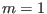
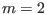
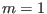
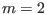
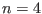

Next: Numerical results of global Up: Numerical results for EAST Previous: EAST Tokamak equilibrium
The eigenfrequency of Eq. (213),
 , as a
function of the radial coordinate gives the continua for the equilibrium. It
can be proved analytically that the eigenfrequency of Eq. (213),
, as a
function of the radial coordinate gives the continua for the equilibrium. It
can be proved analytically that the eigenfrequency of Eq. (213),
 , is a real number (I do not prove this). Making use of
this fact, we know that a crude method of finding the eigenvalue of Eq.
(213) is to find the zero points of the real part of the determinant
of
, is a real number (I do not prove this). Making use of
this fact, we know that a crude method of finding the eigenvalue of Eq.
(213) is to find the zero points of the real part of the determinant
of
 . Since, in this case, both the independent variables and the
value of the function are real, the zero points can be found by using a simple
one-dimension root finder. This method was adopted in the older version of
GTAW (bisection method is used to find roots). In the latest version of GTAW,
as mentioned above, the generalized eigenvalue problem in Eq. (213)
is solved numerically by using the zggev subroutine in Lapack
library. (The eigenvalue problem is solved without the assumption that
. Since, in this case, both the independent variables and the
value of the function are real, the zero points can be found by using a simple
one-dimension root finder. This method was adopted in the older version of
GTAW (bisection method is used to find roots). In the latest version of GTAW,
as mentioned above, the generalized eigenvalue problem in Eq. (213)
is solved numerically by using the zggev subroutine in Lapack
library. (The eigenvalue problem is solved without the assumption that
 is real number. The eigenvalue
is real number. The eigenvalue
 obtained from the routine is very close to a real number, which is consistent
with the analytical conclusion that the eigenvalue
obtained from the routine is very close to a real number, which is consistent
with the analytical conclusion that the eigenvalue
 must
be a real number.)
must
be a real number.)
Figure 16 plots the eigenfrequency of Eq. (213) as a function of the radial coordinate . The result is calculated in the slow sound approximation, thus giving only the Alfven branch of the continua. Also plotted in Fig. 16 are the Alfven continua in the cylindrical limit. As shown in Fig. 16, the Alfven continua in toroidal geometry do not intersect each other, thus forming gaps at the locations where the cylindrical Alfven continua intersect each other.
The first gap, which is formed due to the coupling of sound wave and Alfven
wave, starts from zero frequency. This gap is called BAE gap since
beta-induced Alfven eigenmode (BAE) can exist in this gap. The second gap is
called TAE gap, which is formed mainly due to the coupling of  and
and  poloidal harmonics. The third gap is called EAE gap, which is formed mainly
due to the coupling of
poloidal harmonics. The third gap is called EAE gap, which is formed mainly
due to the coupling of  and
and  poloidal harmonics. The fourth gap is
called NAE gap, which is formed due to the coupling of
poloidal harmonics. The fourth gap is
called NAE gap, which is formed due to the coupling of  and
and  poloidal harmonics. A gap can be further divided into sub-gaps according to
the two dominant poloidal harmonics that are involved in forming the gap. For
example, a sub-gap of the TAE gap is the one that is formed mainly due to the
coupling of  and  harmonics. For the ease of discussion, we call
this sub-gap `` sub-gap'', where the two numbers stand for the
poloidal mode numbers. The frequency range of a sub-gap is defined by the
frequency difference of the two extreme points on the continua. The radial
range of the sub-gap can be defined as the radial region whose center is the
location of one of the extreme points on the continua, width is the half width
between the neighbor left and right extreme points.
poloidal harmonics. A gap can be further divided into sub-gaps according to
the two dominant poloidal harmonics that are involved in forming the gap. For
example, a sub-gap of the TAE gap is the one that is formed mainly due to the
coupling of  and  harmonics. For the ease of discussion, we call
this sub-gap `` sub-gap'', where the two numbers stand for the
poloidal mode numbers. The frequency range of a sub-gap is defined by the
frequency difference of the two extreme points on the continua. The radial
range of the sub-gap can be defined as the radial region whose center is the
location of one of the extreme points on the continua, width is the half width
between the neighbor left and right extreme points.
Figure 17 compares the continua of the full ideal MHD model with those of slow sound and zero approximations. The results indicate that the slow sound approximation eliminates the sound continua while keeps the Alfven continua almost unchanged. The zero approximation eliminates the BAE gap.
(Numerical results indicate that the eigenvalue
 is
always grater than or equal to zero. Can this point be proved analytically?)
is
always grater than or equal to zero. Can this point be proved analytically?)
In order to verify the numerical convergence about the number of the poloidal harmonics included in the expansion, we compares the results obtained when the poloidal harmonic numbers are truncated in the range and those obtained when the truncation region is . The results are plotted in Fig. 18, which shows that the two results agree with each other very well for the low order continua in the core region of the plasma. For continua in the edge region or higher order continua, there are some discrepancies between the two results. These discrepancies are due to that higher order poloidal harmonics are needed in evaluating the continua for those cases.
The  Alfven continua are plotted in Fig. 19, which shows
that there are more TAE gaps than those of the  case. The number of
gaps is roughly given by
for a
monotonic
case. The number of
gaps is roughly given by
for a
monotonic  profile[10].
profile[10].
Remarks: If, instead of the definition (![[*]](crossref.png) ), we define the
), we define the
 operator as
operator as
), instead of (260), is adopted in
Cheng's paper[3]. By intuition, I thought the definition
(260) should work as well as (). Since the definition
(260) is simpler than () (there is no additional minus in
(260)), I prefer using the definition (260). This choice
does not cause me trouble when I use symmetrical truncation of the poloidal
harmonics. Trouble appears when I try using asymmetrical truncation of the
poloidal harmonics. For example, when asymmetrical truncation of the poloidal
harmonics is used (e.g. poloidal harmonics in the range
), it is
easy to verify analytically that the determinant of the resulting matrix for
the case
) must be used in order to
deal with asymmetrical truncation of poloidal harmonics. In summary, the
advantage of using the definition () over (260), is that
the former can deal with the asymmetrical truncation of the poloidal
harmonics, while the latter is limited to the case of symmetrical truncation.
yj 2015-09-04